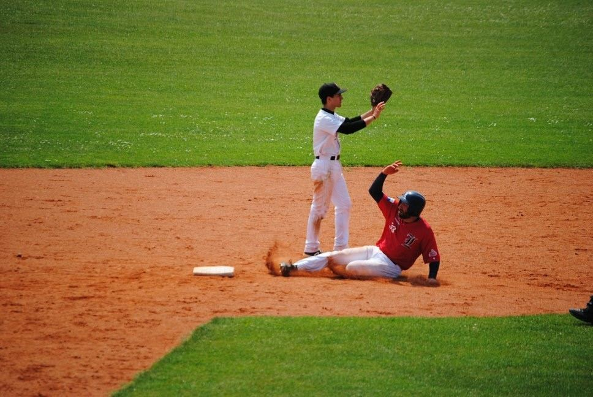
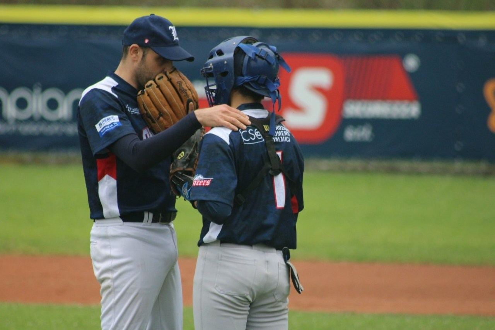

I Lancers Baseball tornano dall’insidiosa trasferta romagnola con una fondamentale doppia vittoria ottenuta sul prestigioso campo dei Pirati di Rimini.
A farne le spese proprio la giovane formazione dello Junior Rimini (seconda formazione dei campioni d’Italia), che si presentava all’incontro come seconda a pari merito con il Longbridge di Bologna.
Il team lastrigiano, contro la tecnica e il talento dei giovani atleti riminesi, ha messo in campo maggiore maturità ed esperienza ottenendo il massimo risultato.
Nella gara del mattino la palla del partente viene affidata ancora a Degl’Innocenti a causa dell’infortunio che affligge ancora il giovane Menoni, Becattini completa la batteria dietro il piatto di casa base.
All’interno formazione tipo con Baratella, Reggioli e Parrini rispettivamente in prima, seconda e terza base con Rudaj schierato interbase; all’esterno Nerbini, Geri e Nannucci, battitore designato Ortiz.
I padroni di casa sbloccano al primo tentativo con un punto segnato ma vengono prontamente recuperati e sorpassati al terzo con un doppio di Parrini che spinge a punto i compagni.
Altri 5 punti arrivano al quarto grazie ad un attacco finalmente più aggressivo, il monte e la difesa continuano il loro eccellente percorso con giocate di qualità che frenano il lineup bianco/arancio.
L’ottava e nona ripresa vengono affidate alle sapienti mani di Vannuzzi che frenerà definitivamente le speranze del Rimini, nel frattempo le mazze lastrigiani conquistavano altri punti: uno al settimo, un altro all’ottavo ed ben due al nono per il definitivo 11 a 1.
Ottima prestazione di tutto il team tra i quali spiccano il capitano Nerbini e l’esperto Nannucci protagonisti di un’ottima giornata nel box di battuta.

Come da copione delle quattro giornate precedenti Morese è il pitcher designato per iniziare gara due con Becattini a ricevere, infield fotocopia di gara uno ed esterni che vengono modificati solamente a sinistra con Degl’Innocenti che sostituisce Nerbini.
Partenza sprint dei toscani che segnano 3 punti al primo e 2 al terzo grazie ad un attacco ancora incisivo come la mattina; Morese tiene bene il giovane lineup avversario per i primi tre inning; al quarto gli avversari si rendono pericolosi con due punti portati a casa e un altro al sesto per il momentaneo 5 a 3.
Con lo stesso punteggio si arriva all’ultima ripresa e i Lancieri non si lasciano sfuggire la possibilità di incrementare il divario; buone battute, qualche base su ball e una difesa romagnola incerta favoriscono altre quattro segnature dei bianco/blu.
I Lancers, con un monumentale Morese in pedana, chiudono anche l’ultimo attacco dei padroni di casa per il definitivo 9 a 3; nove riprese di gran spessore per il lanciatore italo-venezuelano nonostante una difesa più fallosa rispetto gara uno.
Prossimo impegno ancor più determinante in casa del Longbridge 2000, ancora saldi al secondo posto grazie alla doppia vittoria sul Fano.

LE ALTRE CATEGORIE
I Lancierini dell’under 15 escono sconfitti nel confronto di sabato contro l’Arezzo e restano ancora a secco di vittorie.
Sconfitta anche per i piccoli dell’Under 12 che cedono al Padule per 10 a 3; bella vittoria invece per la giovane formazione di Serie C che difende con grinta il Lancers Field dall’attacco dello Junior Firenze e vince di misura per 10 a 9.